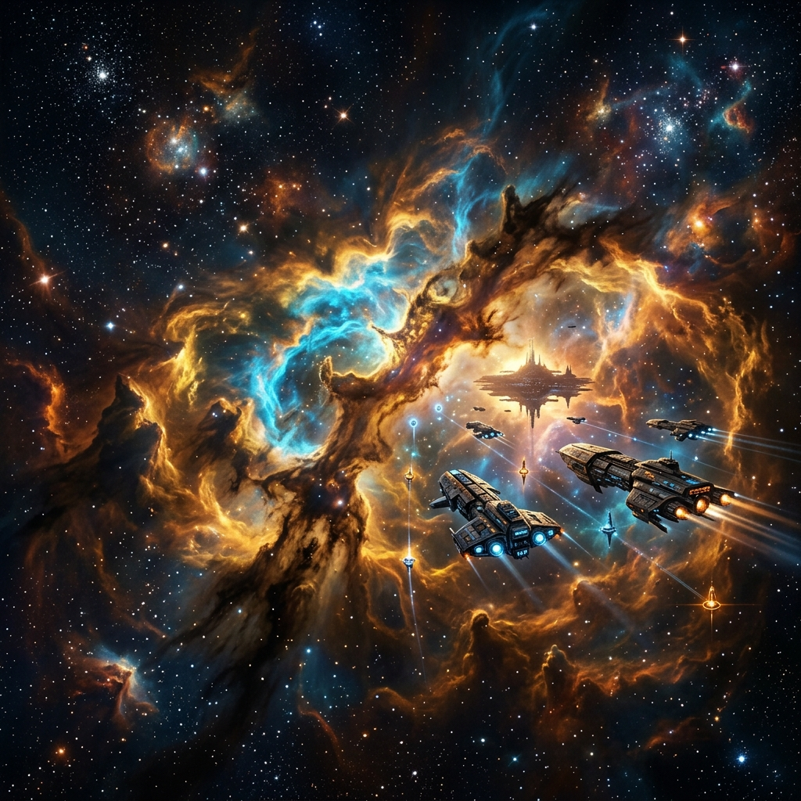
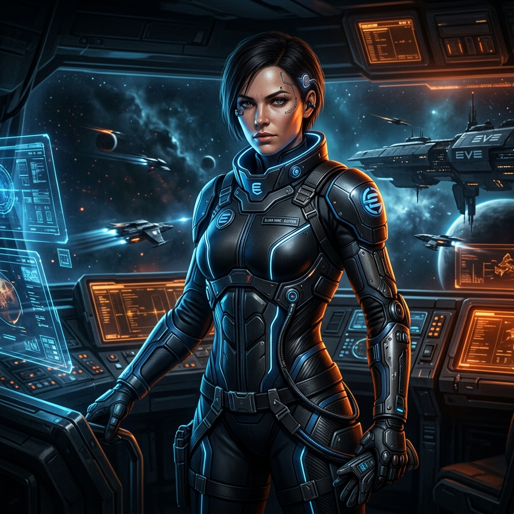

PILOT ID: HIGHTECH
신에덴의 광활한 은하계처럼 한계 없는 웹 생태계를 개발합니다. EVE Online 스타일의 강력하고 조화로운 인터페이스를 통해 구성된 프론트엔드 포트폴리오 시스템에 접속하신 것을 환영합니다.
Career Specializations
최첨단 우주선 콕핏(Cockpit) 인터페이스처럼, 사용자에게 압도적이고 매끄러운 시각적 경험을 제공하는 화면을 구현합니다. 성능 최적화, 반응형 레이아웃, 그리고 고급 애니메이션 처리에 탁월합니다.
Project Database

Planetary Resource Analyzer
행성의 다양한 자원 지형 및 잔여 광물량을 실시간 3D 그래픽과 차트로 모니터링할 수 있는 대시보드 웹 애플리케이션입니다.
Galactic Market Real-Time Engine
은하계 전역의 마켓 시세 변동 데이터를 수집하고, 초당 1만 건의 패킷을 고속 처리하여 실시간 웹소켓 이벤트로 배포하는 백엔드 코어 모듈입니다.
Nebula CI/CD Cluster Autoscaler
다수의 우주 기지(웹 서비스 노드)를 가상화하여 부하 상태에 따라 자동으로 리소스를 확장 및 축소하는 하이브리드 Kubernetes 오케스트레이션 구성안입니다.
Character Fitting

System Administrator Logs
"새로운 은하에 진출하는 조종사(Pilot)처럼, 저는 웹 표준과 아키텍처의 한계를 개척해 나가는 개발자입니다. 복잡한 시스템의 병목 현상을 파악하여 견고하게 튜닝하고, 신뢰성 높은 프론트엔드 환경을 구축하는 것에 심취해 있습니다."